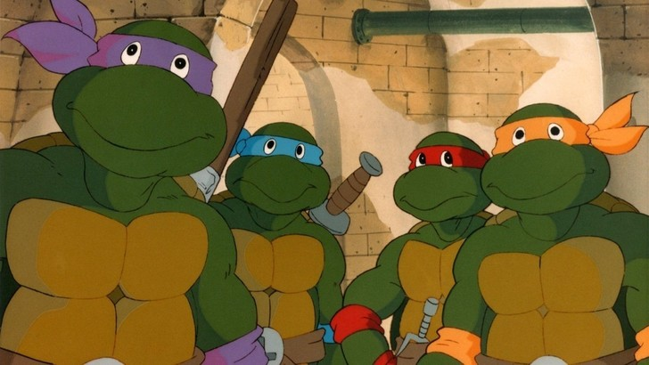

Главные персонажи:

«Черепашки-ниндзя» (англ. Teenage Mutant Ninja Turtles, сокр. TMNT, в Европе — Teenage Mutant Hero Turtles, сокр. TMHT) — американская медиафраншиза, созданная авторами комиксов Кевином Истменом и Питером Лэрдом. Она повествует о четырёх антропоморфных братьях-черепахах — Леонардо, Донателло, Микеланджело и Рафаэле — обучившихся ниндзюцу и борющихся со злом в их родном городе Нью-Йорке. В ходе многочисленных приключений их сопровождают мутировавшая крыса-учитель по имени Сплинтер и друзья-люди в лице Эйприл О’Нил и Кейси Джонса. Неизменными врагами Черепашек являются Бакстер Стокман и Крэнг, а заклятым врагом выступает Шреддер.